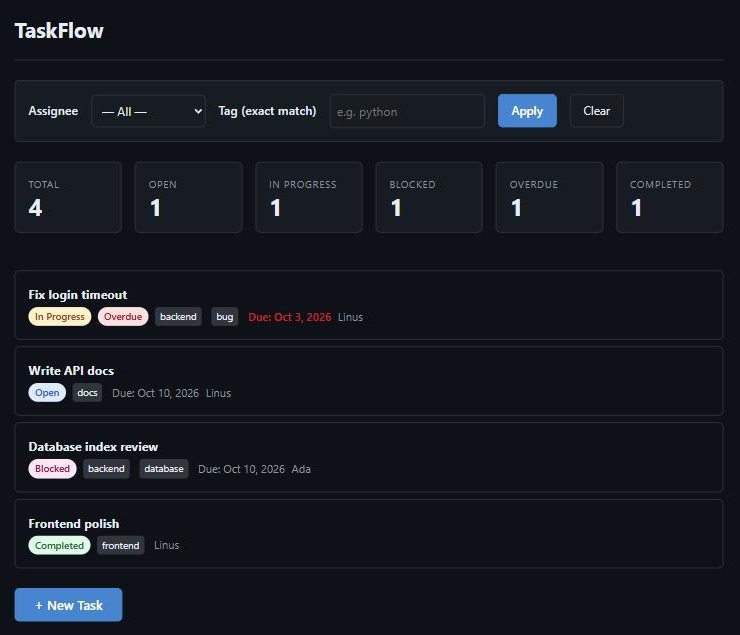
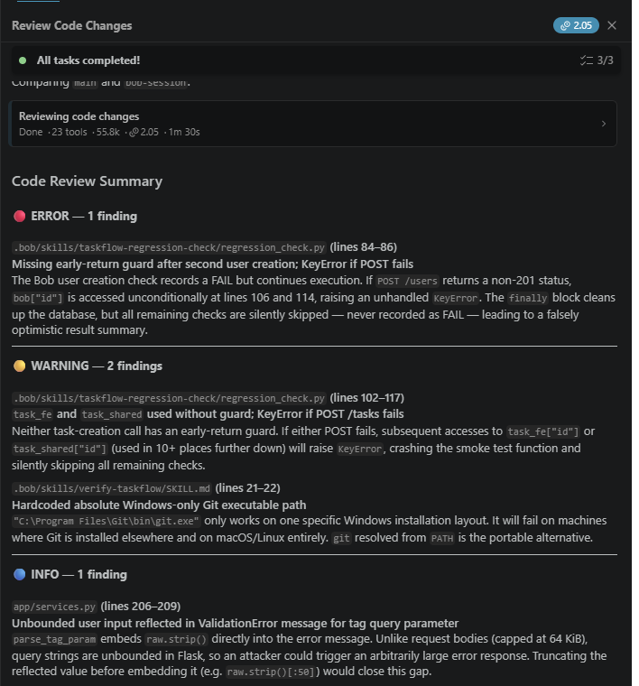

From an unfamiliar, quietly broken codebase to a tested, deployable team task board, engineered with IBM Bob.
Solo participant
Live demo: kltamu.pythonanywhere.com
Code: github.com/KnigguKniggu-droid/taskflow
IBM Bob IDE 2.2.1 and Bob Shell 2.0.5 · Python, Flask, SQLite · vanilla JavaScript · GitHub Actions
Question: can IBM Bob take a developer from zero context to a diagnosed fix, new features, reviewed changes and a deployable product, with every step checkable?
Onboarding onto brownfield code is where developers lose the most time: reading unfamiliar structure, finding a cause rather than a symptom, and changing things without breaking what already works. That is exactly where an AI engineering partner has to earn trust.
pre-bob-baseline, pushed to GitHub before Bob's first prompt.GET /tasks/overdue returned nothing for past-due tasks.?tag= filter, JSON API only.The starter was generated with Claude Code for this exercise and contained one deliberately seeded defect and the unbuilt filter. Bob was never told the answer. At the participant's direction, Claude Code also operated the Bob sessions: it wrote the prompts, handled Bob's approval requests and checked every stage independently, reporting only observed failures back to Bob. Every code change after the tag was made by IBM Bob.
bob_sessions/ (31 task records with Bob task ids), so each claim in this deck can be traced to a prompt, Bob's answer and a commit./init and an AGENTS.md project context; Plan mode walked the request lifecycle, data model and risk areas before any edit./verify-taskflow command, a read-only TaskFlow Reviewer mode and a regression-check hook via /configure-hooks./review with the Findings panel.Used in Bob IDE and Bob Shell: Agent, Plan and Ask modes, the custom reviewer mode, and the IBM i Database and IBM i Developer modes for exploratory portability questions.
completed was stored as NULL, and completed = 0 is never true for NULL under SQL three-valued logic, so every new task vanished from the overdue list. Bob fixed the schema default, backfilled old rows, made inserts explicit, and proved it on databases created by the old schema.
?tag=back must not match backend. Bob matched whole tokens and escaped LIKE wildcards after a failure was reported (a_b matched axb).
Unbounded error reflection, a 500 on oversized ids in PATCH, foreign keys switched off after schema setup, a keyboard trap in the edit dialog, missing security headers.
Simultaneous completions wrote duplicate history rows (109 of 200 trials). Bob's first fix did not hold; with the measurement in hand it switched to compare-and-swap updates: 0 of 200.
/health, a 22-check smoke test, PythonAnywhere deployment guide, GitHub Actions CI.
/review found 4 issues; all fixed in one commit.
Live demo: https://kltamu.pythonanywhere.com · Repository: https://github.com/KnigguKniggu-droid/taskflow